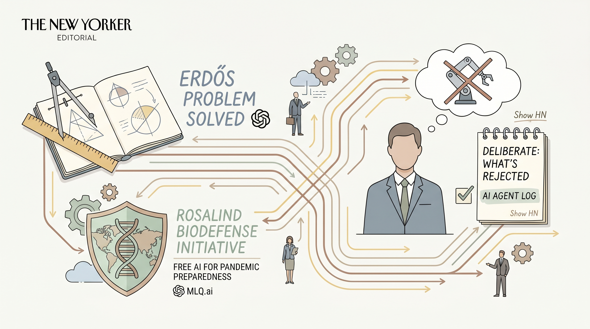

Nvidia发布Cosmos 3开源世界模型，帮助机器人和自动驾驶系统更好地理解和预测真实物理环境。
两克伴AIGC日报
2026-06-01 星期一

本期关注：英伟达新世界模型助力机器人穿行世界 - 阿克西奥斯、NVIDIA AI云生态系统全球扩展，满足全球AI计算需求、台湾产业巨头携手NVIDIA加速全球AI基础设施建设、英伟达在RTX PC和DGX Spark上升级本地AI智能体
📰 行业动态
NVIDIA AI Cloud生态系统加速全球AI工厂基础设施建设，合作伙伴持续扩大产能以满足企业、创业公司和国家需求。
台湾超过500家NVIDIA生态合作伙伴联合布局，100万个MGX rack组件汇聚于25个工厂支撑Vera Rubin基础设施量产。
🔥 今日焦点
NVIDIA在Computex期间发布了面向本地AI Agent的完整生态系统，宣布OpenClaw和Hermes等开源项目在GitHub上获得了惊人的采用速度。这些开源Agent框架能够适配个人用户的偏好，在RTX PC和DGX Spark上实现本地化部署。这意味着普通用户不再需要依赖云端服务，就能在本地电脑上运行私人AI助手来处理日常任务。NVIDIA还同步推出了RTX AI Garage平台，为开发者提供了一套完整的工具链，降低了本地AI Agent的开发门槛。
---
NVIDIA发布了Cosmos 3，这是一个专门为物理AI设计的世界模型。与传统语言模型不同，Cosmos 3能够让机器人在采取行动前进行"思考"——理解物理世界的因果关系，比如物体的运动轨迹、重力影响和碰撞后果。这个模型的核心价值在于它解决了机器人领域的一个根本问题：如何让AI真正理解物理规律，而不是仅仅模仿动作。在实际测试中，使用Cosmos 3的机器人表现出了更好的泛化能力，即使面对从未见过的场景也能做出合理决策。
📚 深度长文
在数字化转型浪潮中，滑铁卢大学Futures Lab汇聚跨学科学生，推出面向真实场景的AI原型系统，其中最具代表性的是手势语言教学AI tutor。该原型融合计算机视觉、自然语言处理和自适应学习算法，实现手势实时识别、语义反馈与个性化学习路径的闭环。相较于传统课堂教学，实验数据显示学员在三个月内的手语词汇掌握速度提升约35%，课堂互动频次提升20%。项目团队通过与本地聋人社区及企业培训部门合作，快速收集多元数据并迭代模型，确保技术可访问性与伦理合规。论文指出，这类学生主导的原型研发模式不仅压缩了概念验证周期，还为AI从业者提供了“从实验室到产业”的可复制路径：① 需求驱动的多模态数据采集；② 快速迭代的用户测试；③ 可扩展的开源部署框架。对关注教育科技、包容性设计和未来工作形态的AI专业人士而言，Futures Lab的案例展示了技术落地的关键环节与潜在的商业价值，值得在产品规划与研究布局中借鉴。
---
本文聚焦当前粒子物理学与宇宙学三大未解之谜：反物质稀缺、暗能量驱动宇宙加速膨胀以及万有理论（ToE）的统一路径。作者DonLincoln凭借在Fermilab的长期实验积累，系统梳理了反物质与正物质不对称性的实验证据——包括CP破坏观测、轻子产生模型以及LHC的最新碰撞数据；在暗能量层面，文章评述了超新星、宇宙微波背景辐射和重子声波振荡等多波段观测结果，阐释了宇宙加速膨胀背后的ΛCDM模型局限；随后，文章从弦论、圈量子引力到模型独立的高能现象学，批判性地比较了不同ToE候选框架的数学结构与可检验预言。阅读价值在于，读者不仅获得前沿实验与理论的交叉概述，还能洞悉数据驱动的研究方法如何塑造新物理的探索路径，对AI从业者而言，文中关于大规模数据处理、统计推断与模型选择的讨论提供了跨学科的启发。
🐦 Ta们说
> "This was right five years ago, and still is:
“Large scale pretrained models are certainly likely to figure prominently in artificial intelligence for the near future, and play an important role in commercial AI for some time to come. The results that have been achieved with them are certainly intriguing and it is worthwhile pursuing them. But it is unwise to assume that these techniques will suffice for AI in general. It may be an effective short-term research strategy to focus on the imm...
> "Current AI is bandaids all the way down; LLMs can’t play nicely with basic tools like databases and knowledge graphs, and you never know what you are going to get.
It’s long time to face facts: LLMs have their uses, but we need a sounder foundation for AI."
🛠️ 产品推荐
AgentThreatBench是由OWASP发布的AI Agent内存安全基准测试工具，专注于评估和量化AI Agent在内存安全方面的防护能力。该工具提供了标准化的测试用例与评估指标体系，覆盖内存泄漏、越界访问、缓冲区溢出等关键安全场景，帮助开发者全面了解其AI Agent的安全防护水平。
作为行业首个专门针对AI Agent内存安全的评测基准，AgentThreatBench填补了AI安全评估领域的空白。它不仅支持自动化测试执行，还能生成详细的安全评估报告，为团队提供可量化的安全指标参考。通过统一的评估标准，开发者和企业能够客观比较不同AI Agent方案的安全性能，从而做出更明智的技术选型决策。
Ralphy是一款基于Claude Code的开源自动化开发工具，通过创新的Ralph循环机制实现任务的自主执行。用户只需将开发任务加入队列，系统便会通宵自动处理：计划→执行→验证→迭代→提交分支，全程无需人工干预。
该工具的核心价值在于彻底改变开发者的工作节奏。开发者可以在睡前批量安排任务，清晨即可获得已完成的工作成果，避免了频繁中断睡眠检查进度的困扰。其完整的工作流设计确保了任务的可靠执行，而分支提交机制则保证了代码管理的规范性。